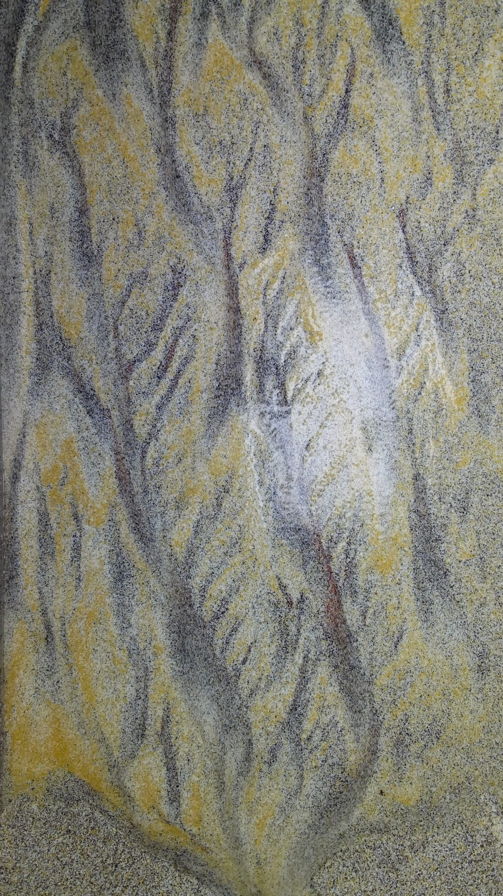

overlay opacity
translate (display px)
scale
3D rotation (deg)
skew (deg)
current transform (per cam)
Pick a cam → drag sliders until features in the overlay (rim corners,
standpipe, water-flow streaks) line up with the kinect base. Copy JSON
grabs all three transforms. The transform is in display-pixel space of the
stacked frames; combine with the underlying image natural sizes if you want
native-pixel offsets.
1/2/3 → switch to anna/sophia/valentine. R → reset active cam. O → toggle overlay on/off.
1/2/3 → switch to anna/sophia/valentine. R → reset active cam. O → toggle overlay on/off.